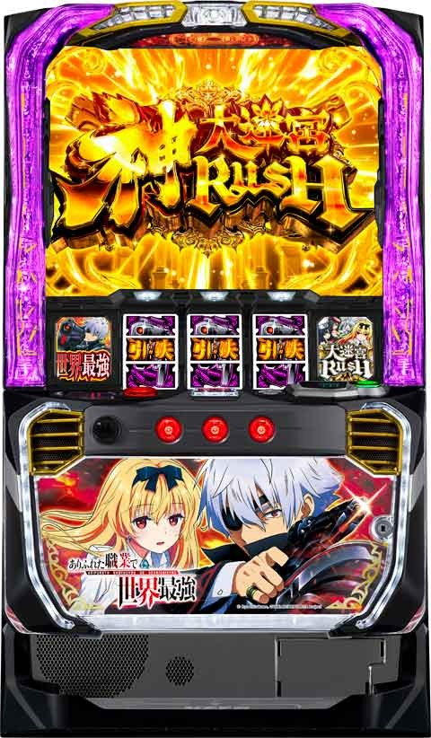
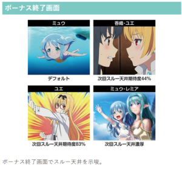
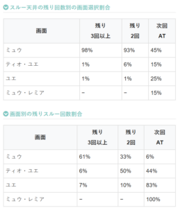

Lありふれた職業で世界最強


狙い目
【リセット狙い】
220Gから
ミュウボーナス2スルー以上 200Gから
朝イチはゾーン弱い

【AT間天井狙い】
・ミュウボーナススルー別
0.1スルー 560Gから
2スルー 480Gから
3スルー以上 AT当選まで
・上位後 210Gから
リセット時と同様天井短縮と思われる。
履歴から確実に判断する事が難しい。
明らかに有利切っている台はリセット時同様の狙い方。
ATの履歴の中で一粒の履歴で1000枚以上超えていると上位ATの可能性アップ。
また、一撃2500枚以上出ていると上位ATに突入しているケースが多い。
メニュー画面から当日に上位AT入っているか確認出来る。
【CZゾーン狙い】
・50-100、100-150ゾーン狙い
朝イチ以外 40Gから
朝イチ 60Gから？(50-100ゾーンのみ？)
上位後 30Gから
※100-150ゾーンは130から140くらいで終わり。
※朝イチのゾーン狙いはハッキリしない上に弱い。
・300-350ゾーン
290Gから
【有利区間切れ狙い】
差枚+1500以上 50Gから100-150ゾーン抜けまで
※上位AT後は有利切れているため、途中で有利切れしてそうな台は狙えない。
やめ時
AT終了後即やめ
ゾーン狙い時のボーナス終了画面で押し引き。「ユエ」、「ミュウ・レミア」はAT当選まで。


その他


参考元
基本情報
- メーカー: SANKYO
- 機械割: 97.7% 〜 114.9%
- 導入開始日: 2025年02月03日（月）
- ゲーム性概要: ●通常時はレア役で引鉄高確を引き当て、ATを目指すのがメインルート ●ATはレア役と錬成ポイントで上乗せ抽選 ●上位ATは純増がアップしてAT性能もアップ！ ●ツラヌキ時は上位ATをかけたCZに突入


打ち方
打ち方・小役
打ち方（小役狙い）
［最初に狙う絵柄］

左リール上段付近に赤7（白BARでも可）を目押し。スイカがスベって来た時以外は、中＆右リールフリー打ちでOKだ。
［スイカ停止時］

中＆右リールにスイカを目押し。赤7or白BAR目安で狙おう。
［引鉄狙えor引鉄を奪え］

発生時は逆押しで全リールに引鉄を目押し。停止個数が多いほど期待度が高く、状況によって停止時の恩恵は変化する。
引鉄停止時の抽選
| 滞在 | 抽選 |
|---|---|
| 通常時 | ATorミュウボーナス抽選（前兆移行） |
| CZ中 | ATorミュウボーナス濃厚 |
| AT中 | 上乗せ特化ゾーン抽選 |
| トリガーラッシュ中 | 停止したリールに表示時された上乗せ獲得 |
［レア役の停止例］

［ベルの停止形］

変則押しはNG

ナビ非発生時は左1stでの消化を推奨だ。
解析情報通常時
小役関連
小役ごとの抽選
| 役 | 抽選 |
|---|---|
| スイカ | 高確・引鉄高確抽選 |
| 弱チェリー・弱チャンス目 | 引鉄高確抽選 |
| 強チェリー・強チャンス目 | 初当り（ATorミュウボーナス）抽選 |
| 引鉄停止 | 初当り（ATorミュウボーナス）抽選 |
引鉄高確中や前兆中のレア役はミュウボーナスorATのチャンス。引鉄は停止個数が多いほど期待度が高く、3つ停止すればAT＋トリガーラッシュ濃厚だ。
レア役確率
| 役 | 確率 |
|---|---|
| スイカ | 約1/128 |
| 弱チェリー | 約1/52 |
| 弱チャンス目 | 約1/166 |
| 強チェリー | 約1/655 |
| 強チャンス目 | 約1/550 |
※状態によって引鉄停止などで表示されるため数値はあくまで一例
レア役合算確率
| 役 | 確率 |
|---|---|
| 弱レア役（スイカ・弱チェリー・弱チャンス目） | 約1/30 |
| 強レア役（強チェリー・強チャンス目） | 約1/299 |
| 全レア役 | 約1/27 |
レア役確率は全設定共通だ。
［スイカ］高確当選率/引鉄高確当選率
| 抽選 | 当選率 |
|---|---|
| 高確移行率 | 約66% |
| 高確中の引鉄高確 | 約55%（設定1） |
| 高確中の高確ゲーム数再セット （引鉄高確非当選時） | 約36% （引鉄高確非当選の約66%） |
| 引鉄高確中の初当り （ATorミュウボーナス） | 12.5% |
［弱チェリー・弱チャンス目］引鉄高確当選率 ※通常・高確中共通
| 設定 | 弱チェリー | 弱チャンス目 |
|---|---|---|
| 1 | 約21% | 約40% |
| 2 | 約22% | 約41% |
| 3 | 約22% | 約42% |
| 4 | 約24% | 約45% |
| 5 | 約25% | 約47% |
| 6 | 約28% | 約50% |
［スイカ］引鉄高確当選率 ※高確中限定
| 設定 | 当選率 |
|---|---|
| 1 | 約55% |
| 2 | 約60% |
| 3 | 約65% |
| 4 | 約70% |
| 5 | 約73% |
| 6 | 約85% |
※上記抽選に漏れた場合のみ約66%で高確ゲーム数を再セット
［強レア役］初当り（ATorミュウボーナス）当選率
| 役 | 通常滞在時 | 高確滞在時 |
|---|---|---|
| 強チェリー | 約34% | 100% |
| 強チャンス目 | 約19% | 約34% |
高確滞在時は引鉄高確および初当り当選率が大幅にアップする。
引鉄の抽選値はコチラ
前兆中の書き換え当選率
初当りフェイク＆本前兆（山岳地帯 防壁や魔人族襲来など）中はレア役で書き換えを抽選。 フェイク前兆中は本前兆 に、 ミュウボーナス本前兆中はAT への書き換えを抽選する。 AT本前兆中はトリガーラッシュのストック が抽選される。 ちなみにCZ前兆中も通常時と同じ抽選をしていて、途中で神山ステージ（引鉄高確）や初当り前兆ステージへ移行した場合はフェイク前兆濃厚。CZ本前兆中に場合にボーナスが当選した場合、ボーナス終了後にCZを放出する。
前兆中の書き換え・トリガーラッシュ当選率
| 役 | フェイク前兆中 | ミュウボーナス 本前兆中 | AT本前兆中 |
|---|---|---|---|
| 弱レア役 | 約1% | 約10% | 約3% |
| 強チェリー | 約50% | 約75% | 約25% |
| 強チャンス目 | 約25% | 約33% | 約10% |
AT本前兆はレア役を複数回引けばトリガーラッシュの複数ストックに期待できる。
有利区間移行時の次回初当りがATになる期待度
| 役 | 期待度 |
|---|---|
| 弱レア役 | 約34% |
| 強レア役 | 100% |
有利区間移行時にレア役を引けば次回の初当りがATになるチャンス。レア役なら約34%でATに、強レア役ならAT濃厚だ。 朝イチ1G目にレア役を引いた場合は初当りの結果に期待しよう。
内部状態関連
高確（魔力駆動四輪ブリーゼ）概要

おもにスイカ契機で移行するCZ・ATの高確状態で、引鉄高確にも移行しやすい状態。滞在中はおもに魔力駆動四輪ブリーゼステージに移行する。
［引鉄高確とは重複しない］ 高確中に引鉄高確に移行したりCZ・ボーナスに当選した場合、高確ゲーム数の減算はSTOPして各種状態終了後に再突入。引鉄高確とも重複せず、同時に当選した場合も引鉄高確が優先される（この場合は引鉄高確終了後に高確へ）。
高確（魔力駆動四輪ブリーゼ）性能
| 項目 | 内容 |
|---|---|
| 移行契機 | 弱レア役時の抽選、ミュウボーナス後 |
| 継続ゲーム数 | 15G＋α （スイカ経由時） |
| 滞在中の特徴 | スイカ時の引鉄高確移行率と 強レア役時の初当り当選率が優遇 ※初当り…ATorミュウボーナス |
| その他 | 滞在中のスイカで引鉄高確非当選の場合は 約66%で高確15Gを再セット |
※移行時・終了時ともに煽りを伴うためステージと内部状態は完全一致ではない
引鉄高確（神山）概要

引鉄を狙えが発生しやすい状態で、滞在中の引鉄停止やスイカはミュウボーナスやAT当選のチャンス。滞在中はおもに神山ステージに移行する。 ちなみに、神山ステージ移行前（内部的な引鉄高確中移行あおり）で狙え演出が出た場合、引鉄停止1個以上濃厚となる。
引鉄高確（神山）性能
| 項目 | 内容 |
|---|---|
| 移行契機 | 弱チェリー・弱チャンス目時の抽選、 高確中のスイカ時の抽選、AT終了時の一部 |
| 継続ゲーム数 | 10G＋α |
| 滞在中の引鉄停止確率 | 約1/7.2 |
| 消化中の抽選 | 引鉄停止時は初当りを抽選 ※初当り…ATorミュウボーナス |
※移行時・終了時ともに煽りを伴うためステージと内部状態は完全一致ではない
引鉄を狙えDATA
| 項目 | 抽選値 |
|---|---|
| 引鉄を狙え発生確率 | 約1/4 |
| 引鉄停止期待度（1個以上） | 約58% |
| 引鉄停止トータル確率 | 1/7.2 |
スイカ・引鉄停止時の初当り （AT・ミュウボーナス） 当選率
| 役 | 当選率 | |
|---|---|---|
| スイカ | 12.5% | |
| 引鉄1個停止 | 左のみ | 約38% |
| 引鉄1個停止 | 中のみ | 約30% |
| 引鉄1個停止 | 右のみ | 約50% |
| 引鉄2個停止 | 左＆中 | 約63% |
| 引鉄2個停止 | 左＆右 | 約60% |
| 引鉄2個停止 | 中＆右 | 約82% |
| 引鉄3固停止 | AT＋トリガーラッシュ濃厚、 さらにロングフリーズ発生のチャンス |
引鉄を狙えはリプレイor1枚役の一部、スイカ以外のレア役成立時に発生。 引鉄停止後は1個でも必ず前兆に発展、スイカ時は約50%で前兆に発展して、前兆時の約25%（トータル12.5%）で初当りに当選する。 内部的にレア役だった場合は引鉄停止濃厚だ。
引鉄を狙え時の演出法則はコチラ
スイカ成立時の高確移行率
| 役 | 移行率 |
|---|---|
| スイカ | 約66% |
高確中のスイカは、引鉄高確非当選時に約66%で高確ゲーム数を再セットする。
設定変更時・AT・上位AT終了時の高確移行率
設定変更時、AT・上位AT終了後は高設定ほど高確へ移行しやすい。
モード
天国モード
設定変更時、AT終了後に移行する可能性のあるモードで、移行時は 約100G消化でATorミュウボーナスに当選 。9割以上がATだが、まれにボーナスに当選することもある。 基本的に初当り（ATやミュウボーナス）当選に関連したモードはこの天国のみ。 AT終了後に天国へ行かなかった場合でも、引鉄高確中にゲーム数が68Gに到達した時に天国モードへの昇格が抽選されるので、60G付近からのレア役には要注目だ。
天国モード性能
| 項目 | 内容 |
|---|---|
| 移行契機 | 設定変更後・AT・上位AT終了時の抽選、 非天国時は引鉄高確中の68G到達時に昇格抽選 |
| 恩恵 | 100G到達で初当りに当選 ※ほぼATだがミュウボーナスの可能性もあり |
※設定変更後はゲーム数がランダムで加算されることがあるため早めに当選する場合あり
CZモード
設定変更時・AT終了後に抽選される、規定ゲーム数消化時のCZ当選を管理する3種類のモード。上位のモードほど 浅いゲーム数でCZに当選しやすく、香織復活チャンス（高期待度CZ）が選択されやすい 。 神大迷宮ラッシュ（上位AT）終了後は、上位のCZモード移行濃厚となる。
厳密には上位AT終了後の覚醒チャレンジがモードD扱いになるのだが、覚醒チャレンジ失敗後は必ずモードCへ移行するので3種類と認識しておけば問題ない。
※設定変更後はゲーム数がランダムで加算されることがあるため早めに当選する場合あり
CZモードの特徴＆CZ抽選規定ゲーム数
| 項目 | 内容 |
|---|---|
| CZモードの特徴 | ● CZモードによって規定ゲーム数ごとの CZ当選率が変化 ● 上位モードほど浅いゲーム数でCZに当選しやすく香織復活チャンスが選ばれやすい |
| CZ抽選の 規定ゲーム数 | ● 100Gor300Gor500Gor700Gor900G |
| その他 | ● 設定変更時・ATor上位AT終了後にモードを決定 ● 上位AT終了時は上位のCZモード濃厚 |
CZ当選の規定ゲーム数には天井という概念がないため、あくまで抽選で決定。最大の900Gに到達したからといって必ずCZに当選するわけではない。
天国モード移行率
設定変更時とAT・上位AT終了後、設定に応じて天国モードへの移行を抽選する。
［設定変更時］CZモード振り分け
| CZモード | 期待度 |
|---|---|
| A | 約25% |
| B | 約45% |
| C | 約30% |
［AT終了後］CZモード移行率
| 前回のモード | モードAへ | モードBへ | モードCへ |
|---|---|---|---|
| A | 約50% | 約44% | 約6% |
| B | 約13% | 約74% | 約13% |
| C | 約75% | － | 約25% |
| 上位AT終了後 | － | － | 100% |
※上位AT終了後…上位AT後の覚醒チャレンジ失敗時
AT終了後は前回のCZモードを参照して抽選される。
CZモードごとのCZ当選分布
期待度は設定によって異なるため、上記のマップと下記のCZ当選率を参照してチェックしよう。
設定ごとのマップ記号別・CZ当選率トータル
高設定ほど◎以外の当選率が高い。100Gや500G、900GでCZに複数回当選すれば高設定に期待できる。
設定ごとのマップ記号別・CZ当選率詳細 設定1
| 記号 | 嫁王決定戦 | 香織復活チャンス | 合算 |
|---|---|---|---|
| ✕ | 約4% | 約1% | 約5% |
| ▲ | 約19% | 約2% | 約21% |
| ◯ | 約28% | 約5% | 約33% |
| ◎ | 約50% | 約30% | 約80% |
設定2
| 記号 | 嫁王決定戦 | 香織復活チャンス | 合算 |
|---|---|---|---|
| ✕ | 約5% | 約1% | 約6% |
| ▲ | 約19% | 約2% | 約21% |
| ◯ | 約28% | 約5% | 約33% |
| ◎ | 約50% | 約30% | 約80% |
設定3
| 記号 | 嫁王決定戦 | 香織復活チャンス | 合算 |
|---|---|---|---|
| ✕ | 約6% | 約1% | 約7% |
| ▲ | 約21% | 約2% | 約23% |
| ◯ | 約30% | 約6% | 約36% |
| ◎ | 約50% | 約30% | 約80% |
設定4
| 記号 | 嫁王決定戦 | 香織復活チャンス | 合算 |
|---|---|---|---|
| ✕ | 約9% | 約1% | 約10% |
| ▲ | 約24% | 約5% | 約29% |
| ◯ | 約33% | 約8% | 約41% |
| ◎ | 約50% | 約30% | 約80% |
設定5
| 記号 | 嫁王決定戦 | 香織復活チャンス | 合算 |
|---|---|---|---|
| ✕ | 約10% | 約1% | 約11% |
| ▲ | 約28% | 約5% | 約33% |
| ◯ | 約35% | 約10% | 約45% |
| ◎ | 約50% | 約30% | 約80% |
設定6
| 記号 | 嫁王決定戦 | 香織復活チャンス | 合算 |
|---|---|---|---|
| ✕ | 約19% | 約2% | 約21% |
| ▲ | 約34% | 約6% | 約40% |
| ◯ | 約40% | 約13% | 約53% |
| ◎ | 約50% | 約30% | 約80% |
香織復活チャンスの振り分けも高設定ほど多い。
CZ
嫁王決定戦

CZのメインパターンで、滞在中は奪えカットイン発生時に引鉄が停止すればATorミュウボーナスに当選。レア役でもATが抽選される。
嫁王決定戦（CZ）性能
| 項目 | 内容 |
|---|---|
| 移行契機 | 規定ゲーム数消化時の抽選 |
| 継続ゲーム数 | 15G |
| ATorミュウボーナス当選期待度 | 約56% |
| 消化中の抽選 | レア役当選でチャンス、 引鉄停止は成功濃厚 |
| その他 | 15G間一度もリプレイを 引かなかった場合は成功濃厚 |
※その他のリプレイは奪えカットイン失敗時にリプレイだった場合もカウント
［奪えカットイン］

発生契機は1枚役orリプレイフラグだ。
香織復活チャンス

毎ゲーム全役でATを抽選する高期待度CZ。成功時は必ずATに当選するところがポイントだ。 突入時は嫁王決定戦の導入時に画面が変化して、香織復活チャンスに切り替わる。
香織復活チャンス（CZ）性能
| 項目 | 内容 |
|---|---|
| 移行契機 | 規定ゲーム数消化時の抽選 |
| 継続ゲーム数 | 15G |
| AT当選期待度 | 約76% |
| 消化中の抽選 | 全役でAT抽選、 弱レア役はチャンス、強レア役は成功濃厚 |
| その他 | 15G間一度もリプレイを 引かなかった場合は成功濃厚 |
［香織復活でAT］

フリーズ発生で倒れた香織が復活＝AT濃厚となる。
［嫁王決定戦］引鉄を奪えDATA
| 項目 | 抽選値 |
|---|---|
| 引鉄を奪え発生確率 | 約1/5 |
| 引鉄停止期待度（1個以上） | 約14% |
| 引鉄2個以上停止期待度 | 停止時の約11% |
引鉄3個停止時は通常時と同じく、ロングフリーズのチャンスともなる。
［嫁王決定戦］初当り （ミュウボーナスorAT） 当選率
| 役 | 当選率 |
|---|---|
| 弱チェリー | 約20% |
| スイカ | 約25% |
| 引鉄1個停止 | 100% |
| 引鉄2個停止 | AT濃厚 |
| 引鉄3個停止 | AT＋トリガーラッシュ濃厚 |
※引鉄3個停止時はさらにロングフリーズ発生のチャンス
［引鉄を奪え］

引鉄を奪えはリプレイ・1枚役の一部、弱チェリー＆スイカ以外のレア役時に発生。内部的にレア役だった場合は引鉄1個以上停止濃厚だ。カットインは赤なら大チャンスだ。
［香織復活チャンス］AT当選率
| 役 | 当選率 |
|---|---|
| 下記以外 | 約3% |
| 弱チェリー | 約50% |
| スイカ | 約60% |
| 弱チャンス目 | 100% |
| 強チェリー | 100% |
| 強チャンス目 | 100% |
弱チャンス目や強レア役はAT濃厚だ。
［煽りパターン］

赤ならチャンス、金ならAT濃厚となる。
フリーズ
ロングフリーズ


発生するのは通常時とCZ中の引鉄停止時の一部。CZ中は発生率がアップする。 発生時はビッグトリガーアタックを経由して上位ATへ移行する。
ロングフリーズ性能
| 項目 | 内容 |
|---|---|
| 当選契機 | 引鉄3個停止時の一部 |
| 恩恵 | ビッグトリガーアタック濃厚 （引鉄高確中なら継続抽選も優遇） |
解析情報ボーナス時
初当り確定画面
確定画面での抽選

初当りの確定画面では、ミュウボーナスだった場合、レア役でATへの昇格を抽選していて、昇格した場合は引鉄高確のゲーム数5G（直乗せ＋5G）も加算。ATだった場合やAT昇格後は引鉄高確のゲーム数5G（直乗せ＋5G）を抽選する。 「－？？」表示時は内部的に押し順ベルが成立していて、昇格・上乗せが抽選。AT確定状態では、押し順に成功すると必ず引鉄高確＋5Gを獲得できる。
確定画面の昇格＆直乗せ当選率
| 役 | 昇格＆直乗せ当選率 |
|---|---|
| 弱レア役 | 約3% |
| 強レア役 | 約20% |
「－？？」時の昇格＆直乗せ当選率
| 当選している初当り | 正解 | 不正解 |
|---|---|---|
| ミュウボーナス | 約1% | － |
| AT | 100% | 約6% |
AT当選時のみ、不正解でも直乗せが抽選される。
［－？？］

正解時はベル揃いする。
ミュウボーナス
ミュウボーナス概要

初当りの1つで、消化中は全役でATを抽選。レア役時はATのチャンスとなる。
スルー回数天井も搭載されていて最大4スルー（ミュウボーナス5回目）でAT当選濃厚。2スルーと3スルーの振り分けもある（スルー回数天井の比率は全設定共通で4スルー：3スルー：2スルー＝1：1：1）。 内部的にATに当選している場合はトリガーラッシュのストックが抽選される。
ミュウボーナス性能
| 項目 | 内容 |
|---|---|
| 継続ゲーム数 | ベルナビ7回まで |
| 消化中の抽選 | 全役でATを抽選、 レア役はチャンスで強チェリーはAT濃厚 |
| その他 | 2回・3回・4回のスルー回数天井あり ※天井到達時は次回ミュウボーナスでAT濃厚 |
［ミュウのアクションに注目］

オレンジの音符ならレア役のチャンス、赤音符なら大チャンスだ。
［告知は最終ゲーム］

途中で当選していた場合でも基本的に最終ゲームのミッションでAT告知が発生する。
消化中のATおよびトリガーラッシュ当選率
| 役 | AT当選 | AT当選後の トリガーラッシュストック |
|---|---|---|
| 下記以外 | 約1% | 約1% |
| 弱レア役 | 約15% | 約15% |
| 強チャンス目 | 約50% | 約33% |
| 強チェリー | 100% | 100% |
開始時のAT抽選は現在調査中。 消化中は毎ゲームの成立役に応じて昇格を抽選、内部的に昇格した後はトリガーラッシュのストックを抽選する。
大迷宮ラッシュ（AT）
AT概要

ゲーム数上乗せタイプのATで、消化中はレア役でゲーム数直乗せや特化ゾーンを、錬成ポイントMAXでゲーム数直乗せを抽選。 直乗せされたゲーム数はすべて「引鉄高確」 になるため、特化ゾーン当選の期待大だ。 弱レア役では上乗せ高確（ステージアップ）も抽選される。
大迷宮ラッシュ（AT）性能
| 項目 | 内容 |
|---|---|
| 移行契機 | 初当り時の一部 |
| 継続ゲーム数 | 初回は最低50G以上 |
| 純増 | 約2.7枚/G |
| 消化中の抽選 | 上乗せ高確（ステージアップ）、引鉄高確、 ゲーム数直乗せ、特化ゾーン、 パンドラゾーン、世界最強チャレンジ |
| 1契機の直乗せゲーム数 | 5G～30G |
AT中の契機ごとの抽選一覧
| 役 | 抽選 |
|---|---|
| リプレイ・ナビなしベル | 錬成ポイント加算 |
| 錬成ポイントMAX | ゲーム数直乗せ抽選 |
| 弱チェリー・弱チャンス目 | 上乗せ高確抽選 |
| スイカ | 上乗せ高確&世界最強チャレンジをW抽選 |
| 強チェリー・強チャンス目 | ゲーム数直乗せ濃厚 |
| 引鉄停止 | 特化ゾーン抽選 |
［AT初回は上乗せが優遇］ AT初当り時は各種上乗せ（内部状態アップは除く）に当選するまで、抽選値が大きく優遇されるため、約90%で上乗せ以上に当選。特化ゾーン（トリガーラッシュorガトリングバースト）当選率は約60%と高くなっている。
［ゲーム数直乗せ］

基本的に前兆を挟まずに即告知される。
［錬成ポイント］

画面右下にある錬成陣のサイズで獲得している錬成ポイントを示唆。ポイントがMAXになれば錬成陣が完成してゲーム数直乗せが抽選される。
［ステージ］

ステージで上乗せ高確を示唆（初当り時は火山からスタート）。状態アップ時は 11Gの保証ゲーム数 があって、保証ゲーム消化後の1枚役（ベルこぼし除く）で1段階転落を抽選する。ステージアップ＆ダウンともに移行煽りを伴うケースが多いので、内部状態とステージは完全に一致するわけではない。 また、引鉄高確中はステージが固定されるため、内部状態は抽選されるが見た目上ではわかりづらい。
ステージごとの平均上乗せ期待度
| ステージ | 期待度 |
|---|---|
| オルクス大迷宮 | 30%以上 |
| ライセン大迷宮 | 50%以上 |
| グリューエン大火山 | 75%以上 |
| メルジーネ海底遺跡 | 上乗せ濃厚 |
弱レア役契機のステージ昇格率
| 移行先 | オルクス 大迷宮滞在中 | ライセン 大迷宮滞在中 | グリューエン 大火山滞在中 |
|---|---|---|---|
| オルクス大迷宮 | 約33% | － | － |
| ライセン大迷宮 | 約60% | 約60% | － |
| グリューエン大火山 | 約6% | 約39% | 約95% |
| メルジーネ海底遺跡 | 約1% | 約1% | 約5% |
※移行煽りがあるのでステージと内部状態は必ず一致するわけではない
1枚役契機のステージ転落率 （保証ゲーム終了後）
| 移行先 | ライセン 大迷宮滞在中 | グリューエン 大火山滞在中 | メルジーネ 海底遺跡滞在中 |
|---|---|---|---|
| オルクス大迷宮 | 約23% | － | － |
| ライセン大迷宮 | 約77% | 約23% | － |
| グリューエン大火山 | － | 約77% | 約23% |
| メルジーネ海底遺跡 | － | － | 約77% |
※移行煽りがあるのでステージと内部状態は必ず一致するわけではない
弱レア役でステージ（内部状態）昇格を抽選、保証ゲーム（11G）終了後の1枚役で転落を抽選。 1枚役は押し順ベルこぼしでも同じ出目が停止するが、転落の対象になるのは純粋な1枚役なので判別は難しい。 また、引鉄高確中や前兆中は転落抽選をしないところもポイントだ。
レア役契機のトータル直乗せ当選率
| 滞在ステージ | 弱チェリー・弱チャンス目 | 強チェリー・強チャンス目 |
|---|---|---|
| オルクス大迷宮 | 約31% | 100% |
| ライセン大迷宮 | 約50% | 100% |
| グリューエン大火山 | 約75% | 100% |
| メルジーネ海底遺跡 | 100% | 100% |
※移行煽りがあるのでステージと内部状態は必ず一致するわけではない
強レア役なら＋10G以上濃厚。スイカは内部状態アップと世界最強チャレンジ（当選率約7%）を抽選するため、直乗せは抽選しない。
［オルクス大迷宮］レア役契機の直乗せ当選率詳細
| 上乗せ | 弱チェリー・弱チャンス目 | 強チェリー・強チャンス目 |
|---|---|---|
| ＋5G | 約25% | － |
| ＋10G | 約4% | 約95% |
| ＋20G | 約1% | 約4% |
| ＋30G | 約1% | 約1% |
| トータル | 約31% | 100% |
［ライセン大迷宮］レア役契機の直乗せ当選率詳細
| 上乗せ | 弱チェリー・弱チャンス目 | 強チェリー・強チャンス目 |
|---|---|---|
| ＋5G | 約40% | － |
| ＋10G | 約8% | 約79% |
| ＋20G | 約1% | 約19% |
| ＋30G | 約1% | 約2% |
| トータル | 約50% | 100% |
［グリューエン大火山］レア役契機の直乗せ当選率詳細
| 上乗せ | 弱チェリー・弱チャンス目 | 強チェリー・強チャンス目 |
|---|---|---|
| ＋5G | 約50% | － |
| ＋10G | 約21% | 約50% |
| ＋20G | 約3% | 約47% |
| ＋30G | 約1% | 約3% |
| トータル | 約75% | 100% |
［メルジーネ海底遺跡］レア役契機の直乗せ当選率詳細
| 上乗せ | 弱チェリー・弱チャンス目 | 強チェリー・強チャンス目 |
|---|---|---|
| ＋5G | 約30% | － |
| ＋10G | 約59% | － |
| ＋20G | 約9% | 約75% |
| ＋30G | 約2% | 約25% |
| トータル | 100% | 100% |
加算される錬成ポイント
| 役 | 錬成ポイント |
|---|---|
| 1枚役 | 1pt or2pt |
| リプレイ | 2pt |
| 1枚ベル | 2pt |
| ナビなし11枚ベル | 1pt |
厳密には押し順ベルこぼしの1枚が1pt、純粋な1枚役が2ptなのだが見た目上の判別は不可。 また、上位AT中は11枚ベルがすべてナビされるので、ナビなし11枚ベルは判別できない。
規定錬成ポイント振り分け
| MAX | 振り分け |
|---|---|
| 10pt | 約7% |
| 20pt | 約9% |
| 30pt | 約6% |
| 40pt | 約9% |
| 50pt | 約69% |
※初回は18pt
錬成ポイントMAX時のトータル直乗せ当選率
| 滞在ステージ | 当選率 |
|---|---|
| オルクス大迷宮 | 約31% |
| ライセン大迷宮 | 約50% |
| グリューエン大火山 | 約75% |
| メルジーネ海底遺跡 | 100% |
※移行煽りがあるのでステージと内部状態は必ず一致するわけではない
錬成ポイントMAX契機の直乗せ当選率詳細
| 上乗せ | オルクス 大迷宮 | ライセン 大迷宮 | グリューエン 大火山 | メルジーネ 海底遺跡 |
|---|---|---|---|---|
| ＋5G | 約31% | 約45% | 約34% | 約10% |
| ＋10G | － | 約5% | 約34% | 約30% |
| ＋20G | － | － | 約5% | 約30% |
| ＋30G | － | － | 約2% | 約30% |
| トータル | 約31% | 約50% | 約75% | 100% |
錬成ポイントMAX時は弱レア役と同じ抽選値で直乗せに当選。ただし、上乗せゲーム数の振り分けは弱レア役のほうが優遇されている。
世界最強チャレンジ当選率
| 役 | 当選率 |
|---|---|
| スイカ | 約7% |
引鉄高確（AT・上位AT中）
引鉄高確概要

レア役や錬成ポイントを契機の上乗せ時に突入する状態で、通常時と同じく滞在中は引鉄確率がアップ。滞在中の引鉄停止は特化ゾーン（トリガーラッシュorガトリングバースト）を抽選する。
引鉄高確（AT/上位AT中）性能
| 項目 | 内容 |
|---|---|
| 移行契機 | AT・上位AT中のゲーム数直乗せ |
| 継続ゲーム数 | 上乗せしたゲーム数分 |
| 滞在中の引鉄停止確率 | 約1/5.3 |
| 消化中の抽選 | 引鉄停止時は特化ゾーンを抽選 |
| その他 | 引鉄停止ごとに抽選するため 特化ゾーンの複数ストックもあり |
引鉄高確中もAT中と同じ抽選値で錬成ポイントは抽選される。
［特化ゾーンは基本的に連続演出経由］

引鉄高確中、特化ゾーンに当選した場合は連続演出を経由して告知される。
［非高確中と同じ抽選値で直乗せ抽選］

引鉄高確中もレア役や錬成ポイントによるゲーム数直乗せは抽選されている。
引鉄停止個数別・特化ゾーン当選率
| 引鉄 | AT初回 | AT初回以外 | 上位AT中 |
|---|---|---|---|
| 1個停止 | 約24% | 約15% | 約10% |
| 2個停止 | 約68% | 約50% | 約33% |
AT初回は抽選値が優遇されるため特化ゾーンに当選しやすい。
特化ゾーンの前兆ゲーム数振り分け
| 前兆 | フェイク前兆 | 本前兆 |
|---|---|---|
| 5G | 約66% | 約19% |
| 6G | 約25% | 約25% |
| 7G | 約6% | 約25% |
| 8G | 約3% | 約25% |
| 9G | － | 約6% |
前兆は5G〜9G。基本的に2Gor3G目に連続演出へ発展する。
トリガーラッシュ
トリガーラッシュ概要

ST型の特化ゾーンで、滞在中は各リールに対応した恩恵（おもに上乗せゲーム数）が表示。引鉄を狙え発生時に引鉄が止まれば、 止まったリールに対応した恩恵を獲得 できる。恩恵を獲得したリールは恩恵が昇格（予め液晶に昇格する恩恵は表示）していき、最終段階到達で恩恵がパンドラゾーンorガトリングバースト（上位AT中はガトリングバースト固定）になる。
トリガーラッシュ性能
| 項目 | AT中 | 上位AT中 |
|---|---|---|
| 移行契機 | 引鉄停止時の抽選 | |
| 継続ゲーム数 | ST6G | ST7G |
| 平均継続率 | 約78% | 約82% |
| 平均上乗せゲーム数 | 約53G | 約69G |
| 引鉄確率 | 約1/4.5 | |
| 消化中の抽選 | 狙えカットイン時の引鉄停止で 対象リールの上乗せ獲得 | |
| その他 | スイカ成立時は上乗せ10Gに加え 1～3GのEXゲーム数を獲得 |
［上乗せ方式説明］

下側に大きく表示されているのが引鉄停止時に上乗せされるゲーム数。上に小さく表示されている8つのパネルが成功時に昇格していく上乗せゲーム数だ。
もちろん引鉄が2つ止まれば2リール分の報酬をゲット。3つ止まった時は500G上乗せ＆ガトリングバーストorパンドラゾーンを獲得できる。最初から玉が7つ以下のパターンも存在する。
［パネルの個数について］ 初期配置パネルの数は2or4or6枚のいずれか。抽選で決まるので、最初から3リールとも残り2個ということもありえる。 また、嫁パネルは1リールにつき最大で3個配置される可能性がある。
［嫁乗せ］

「嫁」はヒロインキャラが上乗せする特殊パターンでシアorティオ＜ユエ＜香織の順に期待度アップ。上乗せ20G以上濃厚で、香織なら50or100G濃厚となる。
［EXゲーム数］

スイカでEXゲーム数を獲得した場合、STのゲーム数消化後に使用される。
引鉄を狙えDATA
| 項目 | 抽選値 |
|---|---|
| 引鉄を狙え発生確率 | 約1/3 |
| 引鉄停止期待度（1個以上） | 約67% |
| 引鉄停止トータル確率 | 1/4.5 |
| 引鉄停止時の2個以上停止期待度 | 14.3% |
通常のカットインでも引鉄停止期待度は約72%と高め。 赤カットインは引鉄停止濃厚、金カットインなら引鉄3個停止濃厚となる。引鉄3個停止時は上乗せ500G上乗せ＋パンドラゾーンorガトリングバースト濃厚になる。
スイカ成立時のEXゲーム数振り分け
| EXゲーム数 | 振り分け |
|---|---|
| ＋1G | 約89% |
| ＋2G | 約9% |
| ＋3G | 約2% |
嫁乗せの上乗せゲーム数振り分け
| キャラ | 20～29G | 30～49G | 50～99G | 100G |
|---|---|---|---|---|
| シア | 約50% | 約25% | 約25% | 約25% |
| ティオ | 約50% | 約25% | 約25% | 約25% |
| ユエ | － | 約50% | 約25% | 約25% |
| 香織 | － | － | 約25% | 約25% |
●●〜●●Gの上乗せゲーム数はすべて均等に振り分けられる（20〜29Gなら各5%）。
［嫁乗せのパターン］

ガトリングバースト
ガトリングバースト概要

毎ゲームATゲーム数の上乗せを抽選する強力な上乗せ特化ゾーン。3G保証で、4G目以降はハズレ目（1枚役）で終了する。トータル継続率は約94%と強烈なので、大量上乗せに期待できる。
ガトリングバースト性能
| 項目 | 内容 |
|---|---|
| 移行契機 | 引鉄停止時の抽選、 トリガーチャンス中上乗せMAX時の一部 |
| 保証ゲーム数 | 3G |
| 保証ゲーム終了後の継続率 | 約94%（1G消化毎に抽選） |
| 消化中の抽選 | 継続するごとにゲーム数を上乗せ |
| 平均上乗せゲーム数 | 約166G |
| その他 | レア役時は上乗せゲーム数優遇＋継続濃厚、 強レア役は30G：50G以上＝1：1 |
上乗せゲーム数振り分け
| 上乗せ | その他 | リプレイ | 弱レア役 | 強レア役 |
|---|---|---|---|---|
| ＋10G | 約95% | 約62% | － | － |
| ＋20G | 約5% | 約32% | 約93% | － |
| ＋30G | － | 約3% | 約6% | 約50% |
| ＋50G | － | 約2% | 約1% | 約40% |
| ＋100G | － | 約1% | － | 約10% |
終了時（1枚役成立）は上乗せが発生しない。
パンドラゾーン
パンドラゾーン概要

おもにトリガーラッシュ中に獲得する可能性がある上位ATをかけたCZの1つ。消化中は全役で上位ATを抽選していて、その他＜リプレイ＜弱チェリー＜スイカ＜弱チャンス目＜強レア役の順でチャンス。各役の一部で「中リールに引鉄を狙え」が発生して、引鉄が止まれば上位AT濃厚だ。
パンドラゾーン性能
| 項目 | 内容 |
|---|---|
| 移行契機 | トリガーチャンス中上乗せMAX時の一部、 引鉄3個停止時の一部など |
| 継続ゲーム数 | 15G |
| 上位AT当選期待度 | 約26% |
| 消化中の抽選 | 全役で成功（上位AT）抽選、 リプレイやレア役はチャンス |
成功当選率（上位AT当選率）
| 役 | 当選率 |
|---|---|
| 下記以外 | 約1% |
| リプレイ | 約4% |
| 弱チェリー | 約15% |
| スイカ | 約30% |
| 弱チャンス目 | 約60% |
| 強レア役 | 100% |
各役の一部で引鉄を狙えが発生する。
世界最強チャレンジ
世界最強チャレンジ概要

AT中のスイカの一部で突入する上位ATをかけたCZの1つ。1G固定で成立役に応じて上位ATを抽選する。トータル期待度は約14%と低めだが、リプレイorレア役成立で上位AT濃厚だ。
世界最強チャレンジ性能
| 項目 | 内容 |
|---|---|
| 移行契機 | AT中のスイカ成立時の一部 |
| 継続ゲーム数 | 1G |
| 上位AT当選期待度 | 約14% |
| 消化中の抽選 | 成立役に応じて成功（上位AT）抽選、 リプレイやレア役は成功濃厚 |
神大迷宮ラッシュ（上位AT）
上位AT概要

通常のATに比べ、純増が約2.7枚Gから約5.0枚/Gにアップするだけでなく、初期ゲーム数は最低100G（突入時のAT残りゲーム数が100G以下の場合は100G、101G以上の時はそのゲーム数を引き継ぐ）。 さらにトリガーラッシュのゲーム数が7G＋αになったりトリガーゾーンの最高報酬がガトリングバーストになるなど、特化ゾーンもパワーアップ。 上位AT終了後は覚醒チャレンジへ突入 するため、ループにも期待できる。
神大迷宮ラッシュ（上位AT）性能
| 項目 | 内容 |
|---|---|
| 移行契機 | パンドラゾーンや世界最強チャレンジ成功、 ビッグトリガーアタック後など |
| 継続ゲーム数 | 初回は最低100G以上 |
| 純増 | 約5.0枚/G |
| 消化中の抽選 | 上乗せ高確（ステージアップ）、引鉄高確、 ゲーム数直乗せ、特化ゾーン |
| その他 | 終了後は必ず覚醒チャレンジへ |
上位AT中の契機ごとの抽選一覧
| 役 | 抽選 |
|---|---|
| リプレイ・ナビなしベル | 錬成ポイント加算 |
| 錬成ポイントMAX | ゲーム数直乗せ抽選 |
| 弱チェリー・弱チャンス目 | 上乗せ高確抽選 |
| スイカ | 上乗せ高確抽選&錬成ポイント大量獲得 |
| 強チェリー・強チャンス目 | ゲーム数直乗せ濃厚 |
| 引鉄停止 | 特化ゾーン抽選 |
初回は錬成ポイント契機のゲーム数直乗せや引鉄停止時の特化ゾーン当選率が優遇される。
［錬成ポイントはあるが錬成陣はない］

錬成ポイントは加算されるが、通常のAT中と異なり錬成陣は見えない。ポイントがMAXになって直乗せに当選した場合は別の演出で上乗せゲーム数を告知する。
［上位AT］レア役契機の直乗せ当選率詳細
| 上乗せ | 弱チェリー・弱チャンス目 | 強チェリー・強チャンス目 |
|---|---|---|
| ＋5G | 約47% | － |
| ＋10G | 約1% | 約94% |
| ＋20G | 約1% | 約5% |
| ＋30G | 約1% | 約1% |
| トータル | 約50% | 100% |
加算される錬成ポイント
| 役 | 錬成ポイント |
|---|---|
| 1枚役 | 2pt |
| リプレイ | 2pt |
| 1枚ベル | 2pt |
| ナビあり11枚ベル | 0or1pt |
| スイカ | 20pt |
上位AT中は世界最強チャレンジの抽選がないぶん、スイカで錬成ポイント20ptを獲得できる。
規定錬成ポイント振り分け
※上位AT昇格（初回）は18pt
錬成ポイントMAX契機の直乗せ当選率
| 上乗せ | 当選率 |
|---|---|
| ＋5G | 約50% |
| ＋10G | 約2% |
| ＋20G | 約1% |
| ＋30G | 約1% |
| トータル | 約54% |
覚醒チャレンジ
覚醒チャレンジ概要

上位AT終了後に突入する4G間の引き戻しCZで、1〜3G間は弱レア役を引けば大チャンス、強レア役なら上位AT濃厚。 ラストの4G目は小役（ベル・リプレイ・レア役）が入賞すれば成功 となる（ベルの押し順は出ない）。 成功後はビッグトリガーアタックで上位ATの初期ゲームを決定。 1〜3G間で内部的に成功した場合は、ビッグトリガーアタックの保証ゲーム数上乗せを抽選する。 高設定ほど成功しやすいところもポイントだ。
覚醒チャレンジ性能
| 項目 | 内容 |
|---|---|
| 移行契機 | 上位AT終了後、エンディング終了後 |
| 継続ゲーム数 | 4G |
| 上位AT当選期待度 | 約44%（高設定ほど高い） |
| 消化中の抽選 | 1～3G目はレア役で上位AT復帰抽選、 最終ゲームは小役入賞で上位AT復帰濃厚 |
［1〜3G間］

［4G目］

ビッグトリガーアタック当選率
| 役 | 1～3G目 | 4G目 |
|---|---|---|
| リプレイ | － | 100% |
| ベル揃い | － | 100% |
| 弱レア役 | 約70% | 100% |
| 強レア役 | 100% | 100% |
※ベルの押し順ナビは発生しない
最終ゲームでは小役を引けば成功濃厚だ。
成功期待度
| 設定 | 期待度 |
|---|---|
| 1 | 約44% |
| 2 | 約45% |
| 3 | 約48% |
| 4 | 約53% |
| 5 | 約54% |
| 6 | 約57% |
成功後の保証ゲーム数上乗せ当選率
| 役 | 当選率 |
|---|---|
| 弱レア役 | 約20% |
| 強レア役 | 100% |
※当選時はビッグトリガーアタックの保証ゲーム数を1G上乗せ
道中のレア役で成功した時は、残りのゲーム数でビッグトリガーアタックの上乗せが抽選される。
ビッグトリガーアタック
ビッグトリガーアタック概要

覚醒チャレンジ経由で上位ATを引き戻した時に突入する、上位ATの初期ゲーム数決定ゾーン。保証ゲーム数は最低2Gで、毎ゲーム50Gor100Gを上乗せする（レア役は100Gのチャンスかつ上乗せゲーム数を2or3倍にアップ）ため、最低でも100Gを上乗せ。3G目以降は転落に漏れるまで50Gor100Gを上乗せしていく。
ビッグトリガーアタック性能
| 項目 | 内容 |
|---|---|
| 移行契機 | 覚醒チャレンジ成功後、ロングフリーズ後 |
| 保証ゲーム数 | 2G |
| 消化中の抽選 | 継続するごとに成立役に応じて 上位ATの初期ゲーム数を50～100G上乗せ |
［リール逆回転で上乗せ＆継続］

レバーON時にリールが逆回転すると世界最強演出が発生してゲーム数を上乗せする。
ループ当選率
最低保証が2Gあるので、ループ抽選は保証ゲーム数分が終わったあとにおこなわれる。
1G目の成立役別・基本ゲーム数振り分け
| 役 | 50G | 100G |
|---|---|---|
| その他 | 約99% | 約1% |
| 弱レア役 | 約87% | 約13% |
| 強レア役 | － | 100% |
1G目は成立役に応じて基本ゲーム数を決定。 2G目以降のレア役はループ濃厚のうえ、弱レア役なら2倍、強レア役なら3倍のゲーム数（3倍は基本値が100Gなら＋300G）を上乗せ。 保証ゲーム数区間も上乗せ倍率は適応されるが、保証ゲーム数はレア役を引いても減算される。
ツラヌキ・有利区間
ツラヌキ条件＆恩恵
| 項目 | 内容 |
|---|---|
| 条件 | 規定枚数到達（エンディング発生） |
| 恩恵 | 覚醒チャレンジに突入 覚醒チャレンジの解説はコチラ |

エンディング終了後に上位AT突入をかけた覚醒チャレンジへ突入する。
演出情報
通常時
ステージごとの示唆
| ステージ | 示唆 |
|---|---|
| 宿場町ホルアド | デフォルト |
| 湖畔の町ウル | デフォルト |
| ハイリヒ王国 | デフォルト |
| 魔力駆動四輪ブリーゼ | 高確（ATorミュウボーナスの高確） |
| 神山 | 引鉄高確 |
| 海上の町エリセン | CZ前兆 |
| 山岳地帯 防壁 | 規定ゲーム数や強チャンス目契機の初当り前兆 |
| 魔人族襲来 | 規定ゲーム数や強レア役契機の初当り前兆 |
| ノイント降臨 | 期待度約90%の初当り前兆 ※基本的に魔人族襲来中に発展 |
| クラスメイト前兆 | 期待度約90%の初当り前兆 ※基本的に魔人族襲来中に発展 |
CZ対応・前兆ステージごとの本前兆期待度
| ステージ | 期待度 |
|---|---|
| 海上の町エリセン | 約34% |
※滞在ゲーム数は7～24G前後
初当り対応・前兆ステージごとの本前兆期待度
| ステージ | 期待度 |
|---|---|
| 山岳地帯 防壁 | 約28% |
| 魔人族襲来 | 約37% |
| ノイント降臨 | 約90% |
| クラスメイト前兆 | 約90% |
※滞在ゲーム数は9～32G前後
［宿場町ホルアド］

［湖畔の町ウル］

［ハイリヒ王国］

［魔力駆動四輪ブリーゼ］

［神山］

［海上の町エリセン］

［山岳地帯 防壁］

［魔神族襲来］

［ノイント降臨］

［クラスメイト前兆］

引鉄を狙え時の演出法則
| パターン | 法則 | |
|---|---|---|
| カットイン | シア | ● 引鉄停止期待度は やや高め ● 引鉄停止時の初当り期待度はやや低め |
| カットイン | ティオ | ● 引鉄停止期待度はやや低め ● 引鉄停止時の初当り期待度は やや高め |
| カットイン | ユエ | ● 引鉄停止期待度は そこそこ高い ● 引鉄停止時は初当りにも繋がりやすい |
| カットイン | 香織 | ● 引鉄停止期待度は 高い ● 引鉄停止時は初当りも 高い |
| カットイン | ハジメ | ● 引鉄停止 濃厚 ● 初当り期待度は 激高 |
| 引鉄停止時のエフェクト | ● 青＜赤＜虹の順で期待度アップ ● 赤は大チャンス、虹は初当り濃厚 |
発生したカットインによって引鉄停止期待度や2個以上停止期待度が変化する。
カットインのキャラ別期待度
| キャラ | 引鉄停止期待度 | 引鉄停止時の 初当り期待度 | 発生時の初当り トータル期待度 |
|---|---|---|---|
| シア | 約61% | 約31% | 約19% |
| ティオ | 約43% | 約56% | 約24% |
| ユエ | 約57% | 約43% | 約25% |
| 香織 | 約89% | 約81% | 約72% |
| ハジメ | 100% | 約98% | 約98% |
引鉄停止時のエフェクト別初当り期待度
| キャラ | 青 | 赤 | 虹 |
|---|---|---|---|
| シア | 約29% | 約98% | 100% |
| ティオ | 約54% | 約98% | 100% |
| ユエ | 約41% | 約98% | 100% |
| 香織 | 約80% | 約98% | 100% |
| ハジメ | 発生なし | 約98% | 100% |
［カットインの種類］

［引鉄停止時のエフェクト］

エフェクトのキャラはカットインに対応している。
［海上の町エリセン］演出法則
| パターン | 法則 |
|---|---|
| 移行時の アイキャッチ | ● ミュウ単体パターンがデフォルト ● ハジメ＆ユエなら大チャンス |
| 連続演出 （ミッション） | ● シア＜ティオ＜ユエ＜香織の順でチャンス ● チャンスアップ発生時はほぼCZ当選 |
［海上の町エリセン］演出別のCZ期待度
| 演出 | パターン | 期待度 |
|---|---|---|
| アイキャッチ | ミュウ | 約31% |
| アイキャッチ | ハジメ＆ユエ | 約80% |
| 井戸端 | トータル | 約36% |
| 井戸端 | デフォルトパターン | 約35% |
| 井戸端 | 赤枠 | 約65% |
| 井戸端 | シア | 約29% |
| 井戸端 | ティオ | 約32% |
| 井戸端 | ユエ | 約65% |
| 井戸端 | 香織 | 約82% |
| 井戸端 | 連続演出発展 | 約30% |
| 潜水 | トータル | 約35% |
| 潜水 | デフォルトパターン | 約34% |
| 潜水 | ミュウカットイン | 約53% |
| 潜水 | 水着 | 約30% |
| 潜水 | リーさん | 約30% |
| 潜水 | チャンス | 約71% |
| 潜水 | 連続演出発展 | 約97% |
| ミニキャラ | トータル | 約36% |
| ミニキャラ | SU1 | 約35% |
| ミニキャラ | SU2 | 約35% |
| ミニキャラ | SU3 | 約36% |
| ミニキャラ | SU4 | 約81% |
| ミニキャラ | SU5 | 約95% |
| ミニキャラ | 連続演出発展 | 約33% |
| レミア | トータル | 約31% |
| レミア | 今夜告げることにする | 約36% |
| レミア | ごちそう | 約29% |
| レミア | 期待 | 約70% |
| レミア | 連続演出発展 | 約99% |
連続演出トータル期待度
| 連続演出 | 期待度 |
|---|---|
| シアミッション | 約22% |
| ティオミッション | 約30% |
| ユエミッション | 約74% |
| 香織ミッション | 約94% |
連続演出チャンスアップ別期待度
| 連続演出 | タイトルの色 | 2G目のカットイン | ||
|---|---|---|---|---|
| 連続演出 | 白 | 赤 | なし | あり |
| シアミッション | 約15% | 約99% | 約13% | 約99% |
| ティオミッション | 約21% | 約99% | 約19% | 約99% |
| ユエミッション | 約64% | 約99% | 約60% | 約99% |
| 香織ミッション | 約91% | 約99% | 約90% | 100% |
CZ本前兆中だった場合は、初当りに当選しても、見た目はCZ前兆が続き、ミュウボーナスだった場合は終了後にCZを放出。 そのため、途中で神山ステージ（引鉄高確）や初当り前兆ステージへ移行した場合は、フェイク前兆だったことになる。
［移行時のアイキャッチ］

［演出パターン］

［連続演出］

［連続演出チャンスアップ］

連続演出はチャンスアップが発生した時点でほぼCZ当選。香織ミッション成功時は高期待度CZの香織復活チャンス発展に期待できる。
［山岳地帯 防壁］演出法則
| パターン | 法則 |
|---|---|
| 移行時の アイキャッチ | ● ハジメ単体パターンがデフォルト ● ハジメ＆ユエなら大チャンス |
| 連続演出発展 | ● 魔人族襲来に移行せず連続演出発展で期待度約80% ● ハズれても魔人族襲来に移行すれば激アツ |
［山岳地帯 防壁］演出別の初当り期待度
| 演出 | パターン | 期待度 |
|---|---|---|
| アイキャッチ | ハジメ | 約27% |
| アイキャッチ | ハジメ＆ユエ | 約61% |
| 決意 | 気配なし | 約20% |
| 決意 | 弱 | 約29% |
| 決意 | 強 | 約77% |
| 異変 | 平穏 | 約16% |
| 異変 | 小爆発 | 約35% |
| 異変 | 大爆発 | 約80% |
| 恩師 | 喋る | 約21% |
| 恩師 | 微笑む | 約26% |
| 恩師 | 心配する | 約45% |
| 恩師 | 懇願する | 約83% |
| 忠霊塔 | 約42% | |
| 画面縮小 | 全体 | 約32% |
| 画面縮小 | 骸骨 | 約35% |
| 画面縮小 | オーク | 約47% |
| 画面縮小 | ドラゴン | 約97% |
| 画面縮小 | フリード→魔人族襲来へ | 約30% |
| 画面縮小 | 清水→魔人族襲来へ | 約89% |
［移行時のアイキャッチ］

［その他演出パターン］

［魔人族襲来］演出法則
| パターン | 法則 |
|---|---|
| 作戦会議演出 | ● 3人ver.なら大チャンス |
| 弾痕演出 | ● 赤エフェクトなら大チャンス |
| 不穏な影演出 | ● 赤オーラなら大チャンス |
| 連続演出 | ● シア＜ティオ＜ユエの順でチャンス |
| 金色系の演出発生 | ● 初当り（ATorミュウボーナス）濃厚 |
| WIN表示 | ● 必ず報酬錬成が発生してAT濃厚 ● さらに追撃錬成発生でトリガーラッシュも濃厚 |
［魔人族襲来］演出別の初当り期待度
| 演出 | パターン | 期待度 |
|---|---|---|
| 弾痕 | 白 | 約39% |
| 弾痕 | 赤 | 約97% |
| 作戦会議 | レバーON時：弱 | 約35% |
| 作戦会議 | レバーON時：中 | 約68% |
| 作戦会議 | レバーON時：強 | 約95% |
| 作戦会議 | シア | 約36% |
| 作戦会議 | ティオ | 約38% |
| 作戦会議 | ユエ | 約42% |
| 作戦会議 | 三人 | 約73% |
| 王都急襲 | 本当に敵軍が～ | 約33% |
| 王都急襲 | 反応：中→大結界が破られた | 約59% |
| 王都急襲 | 反応：強→大結界が破られた | 約75% |
| 王都急襲 | レバーON時：弱 | 約36% |
| 王都急襲 | レバーON時：強 | 約85% |
| 王都急襲 | 第1停止時に告知 | 約30% |
| 王都急襲 | 第3停止時に告知 | 約59% |
| 魔物接近 | 第1停止時：弱 | 約29% |
| 魔物接近 | 第1停止時：強 | 約52% |
| 魔物接近 | デカイ気配 | 約48% |
| 魔物接近 | 大量の気配 | 約80% |
| 迎撃 | レバーON時：弱 | 約37% |
| 迎撃 | レバーON時：強 | 約97% |
| 迎撃 | シア | 約37% |
| 迎撃 | ティオ | 約40% |
| 迎撃 | ユエ | 約43% |
| 迎撃 | ハジメ | 約69% |
| 不穏な影 | レバーON時：弱 | 約36% |
| 不穏な影 | レバーON時：強 | 約63% |
| 不穏な影 | シルエット：白（鳥） | 約34% |
| 不穏な影 | シルエット：白（骸骨＆オーク） | 約46% |
| 不穏な影 | シルエット：赤（骸骨＆オーク） | 約86% |
| 不穏な影 | 第1停止時に告知 | 約31% |
| 不穏な影 | 第3停止時に告知 | 約51% |
| シャッタークラスメイト煽り | 約55% | |
| クラスメイト前兆 | 約98% | |
| ノイント降臨 | 約91% | |
| 二人は最強 | 100% | |
| 二大女神 | 約92% | |
| トータス伝承記 | 約60% | |
| 魔国ガーランド | 約55% | |
| 雫剣舞 | 約87% | |
| カトレアの誘い | 約41% | |
| パンドラの箱 | 約90% |
基本的に通常時と共通の二大女神やトータス伝承機演出などは前兆中でもレア役対応。 各演出で登場する味方キャラは連続演出の種類を示唆している。ハジメは高期待度の「無能の無双」を示唆するため期待大だ。
［注目の演出パターン］

［金色系の演出］

［WIN表示］

［報酬錬成］

報酬錬成発生でAT濃厚。
［追撃錬成］

報酬錬成後に追撃錬成が発生すれば特化ゾーンのトリガーラッシュがストックされる。
通常時の演出法則
| 演出 | 対応役 | 引鉄高確期待度 | 初当り期待度 |
|---|---|---|---|
| ウルのカレー屋 | 全役 | 約1% | 1%未満 |
| 吹き出し | 全役 | 約1% | 1%未満 |
| 開拓 | 全役 | 約1% | 1%未満 |
| ユエ先生 | 小役以上 | 約3% | 1%未満 |
| 駄竜 | 全役 | 約6% | 1%未満 |
| シア散歩 | 全役 | 約6% | 1%未満 |
| ギルド | 全役 | 約1% | 1%未満 |
| 服屋 | 小役以上 | 約3% | 1%未満 |
| 食事 | 全役 | 約1% | 1%未満 |
| お説教 | 全役 | 約1% | 1%未満 |
| リリアーナ | 全役 | 約1% | 1%未満 |
| 王都の空 | 小役以上 | 約3% | 1%未満 |
| キャラSU | 小役以上 | 約2% | 約1% |
| ヒロインSU | 全役 | 約5% | 1%未満 |
| 私はユエ | レア役以上 ※チェリー系 | 約20% | 約4% |
| 二大女神 | レア役以上 | 約20% | 約3% |
| トータス伝承記 | レア役以上 | 約17% | 約4% |
| シア未来予知 | 小役以上 | 約10% | 約3% |
| 魔国ガーランド | レア役以上 | 約7% | 約30% |
| 宿 | 全役 | 約4% | 約6% |
| 雫剣舞 | レア役以上 | 約18% | 約5% |
| カトレアの誘い | レア役以上 | 約1% | 約4% |
| ティオ誘惑 | レア役以上 ※スイカ系 | 約8% | 約4% |
| 香織般若 | 小役以上 | 約5% | 約1% |
| カーテンシルエット | 全役 | 約2% | 1%未満 |
| パンドラの箱 | 強レア役以上 | － | 約29% |
| 二人は最強 | 全役 | － | 100% |
［私はユエ演出］ 開始時やラストの文字色で期待度変化。

［二大女神演出］ 香織と雫が登場する。

［魔国ガーランド演出］

［雫剣舞演出］

［パンドラの箱演出］

［二人は最強演出］ 発生した時点で初当り濃厚だ。

宝物庫演出の対応役
開始時の強パターン（激しいエフェクト）はレア役濃厚。アイテム出現は第1停止時がデフォルト、第3停止時ならチャンスアップとなる。

宝物庫演出のアイテム別対応役
| アイテム | 対応役＆示唆 |
|---|---|
| ブローチ | リプレイor弱チャンス目 |
| リボン | リプレイor弱チャンス目 |
| 扇子 | 共通ベル（1枚）or弱チャンス目 |
| 紋章 | 全役（頻出すればCZ本前兆に期待） |
| 弾丸 | ハズレorリプレイor共通ベルでCZ期待度アップ、 弱チャンス目なら引鉄高確に期待 |
| ドンナー | 弱レア役 |
| メツェライ | 強レア役 |
| 好機 | 全レア役 |
| CZ | CZ濃厚 |
| WIN | 初当り（ミュウボーナスorAT）濃厚 |
連続演出・トータル期待度
| 連続演出 | 山岳地帯 防壁経由 | 魔人族襲来経由 |
|---|---|---|
| シアVSミハエル | 約82% | 約25% |
| ティオVSカトレア | 約98% | 約33% |
| ユエVSフリード | 約99% | 約56% |
| 無能の無双 | － | 約95% |
| 神の使徒 | － | 約91% |
基本的に連続演出は「魔人族襲来」中に発生するが、魔人族襲来の前段階である「山岳地帯 防壁」で発生した場合は激アツ。 また、山岳地帯 防壁中の連続演出ハズレ後に魔人族襲来へ移行した場合も激アツとなる。 実戦上、「無能の無双」と「神の使徒」は魔神襲来経由でのみ発生している。
［シアVSミハエル］

［シアVSミハエル］チャンスアップ別期待度
| チャンスアップ | 山岳地帯 防壁経由 | 魔人族襲来経由 | |
|---|---|---|---|
| タイトル | 白 | 約81% | 約19% |
| タイトル | 赤 | 100% | 約97% |
| 展開 | 劣勢 | － | 約17% |
| 展開 | 優勢 | － | 約70% |
| 引鉄を引け | 白 | 約80% | 約15% |
| 引鉄を引け | 赤 | 100% | 約94% |
| ハズレ後の魔人族襲来発展 | 約76% | － |
［ティオVSカトレア］

［ティオVSカトレア］チャンスアップ別期待度
| チャンスアップ | 山岳地帯 防壁経由 | 魔人族襲来経由 | |
|---|---|---|---|
| タイトル | 白 | 約98% | 約25% |
| タイトル | 赤 | 100% | 約98% |
| 展開 | 劣勢 | － | 約23% |
| 展開 | 優勢 | － | 約78% |
| 引鉄を引け | 白 | 約98% | 約21% |
| 引鉄を引け | 赤 | 100% | 約96% |
| ハズレ後の魔人族襲来発展 | 約97% | － |
［ユエVSフリード］

［ユエVSフリード］チャンスアップ別期待度
| チャンスアップ | 山岳地帯 防壁経由 | 魔人族襲来経由 | |
|---|---|---|---|
| タイトル | 白 | 約99% | 約46% |
| タイトル | 赤 | 100% | 約99% |
| 展開 | 劣勢 | － | 約43% |
| 展開 | 優勢 | － | 約90% |
| 引鉄を引け | 白 | 約99% | 約39% |
| 引鉄を引け | 赤 | 100% | 約98% |
| ハズレ後の魔人族襲来発展 | 約99% | － |
［無能の無双］

［無能の無双］チャンスアップ別期待度
| チャンスアップ | 期待度 | |
|---|---|---|
| タイトル | 白 | 約94% |
| タイトル | 赤 | 約99% |
| 字幕 | 白 | 約93% |
| 字幕 | 赤 | 約99% |
| 引鉄を引け | 白 | 約90% |
| 引鉄を引け | 赤 | 約99% |
［神の使徒］

［神の使徒］チャンスアップ別期待度
| チャンスアップ | 期待度 | |
|---|---|---|
| タイトル | 白 | 約90% |
| タイトル | 赤 | 約99% |
| 字幕 | 白 | 約83% |
| 字幕 | 赤 | 約99% |
| 引鉄を引け | 白 | 約85% |
| 引鉄を引け | 赤 | 約99% |
［チャンスアップは激アツ］ チャンスアップは発生した時点で激アツ、金タイトルや金文字は勝利濃厚となる。

CZ
［嫁王決定戦］演出別のCZ期待度
| 演出 | パターン | 期待度 |
|---|---|---|
| 引鉄を奪え | 青 | 約8% |
| 引鉄を奪え | 赤 | 100% |
| 横取り | トータル | 約5% |
| 横取り | PUSH表示 | 約24% |
［引鉄を奪え演出：赤］ 赤ならCZ濃厚！

［横取り演出：PUSH］ PUSH表示でチャンス、ボタンが飛び出せばAT濃厚だ。

［香織復活チャンス］復活煽りパターン別のCZ期待度
| 煽りパターン | 期待度 |
|---|---|
| 白枠3枚（ショート） | 約5% |
| 白枠7枚（ロング） | 約16% |
| 赤枠 | 約99% |
| 金枠 | 100% |
［煽りパターン］ 金ならCZ濃厚！

ミュウボーナス
［ミュウボーナス］演出別のAT期待度
| 演出 | パターン | 期待度 |
|---|---|---|
| レバーON時の 頭上のマーク | 青（気付き） | 約3% |
| レバーON時の 頭上のマーク | オレンジ（驚き） | 約27% |
| レバーON時の 頭上のマーク | 赤（！マーク） | 100% |
| 第3停止時の 音符の色 | 青 | 約3% |
| 第3停止時の 音符の色 | オレンジ | 約8% |
| 第3停止時の アクション | ジャンプ | 約75% |
| 第3停止時の アクション | 喜ぶ | 100% |
パターンごとの演出法則
| パターン | 法則 |
|---|---|
| 青（気付き） | ● 押し順ベル対応 ● 押し順ベル・レア役否定で期待度約50% |
| オレンジ（驚き） | ● レア役対応 ● レア役否定で期待度約70% |
| 赤（！マーク） | ● 強チェリー対応かつAT濃厚 ● 強チェリー否定でAT＋トリガーラッシュ濃厚 |
| 音符：青 | ● 押し順ベル対応 ● 押し順ベル否定で期待度50%以上 |
| ジャンプ | ● レア役対応かつ大チャンス ● レア役否定でAT濃厚 |
ジャッジ演出の期待度
| パターン | 期待度 | |
|---|---|---|
| トータル | 約22% | |
| タイトル | 白 | 約15% |
| タイトル | 赤 | 約99% |
| 2G目の カットイン | なし | 約20% |
| 2G目の カットイン | あり | 約99% |
レバーON時のミュウのアクションで成立役や期待度を示唆。 ラストのジャッジ演出では赤タイトルやカットインが発生すればほぼAT当選だ。
［ミュウの大チャンスアクション］

［ジャッジ演出：赤タイトル］

［ジャッジ演出：カットイン］

終了画面のスルー回数天井示唆
| 終了画面 | 示唆 |
|---|---|
| ミュウ | デフォルト |
| 香織＆ユエ | 次回のボーナスでATのチャンス |
| ユエ魔法ポーズ | 次回ミュウボーナスのAT期待度80%超 |
| ミュウ＆レミア | 次回ミュウボーナスでAT濃厚 |
スルー回数天井の残り回数割合
| 画面 | 残り3回以上 | 残り2回 | 次回AT |
|---|---|---|---|
| ミュウ | 約61% | 約33% | 約6% |
| 香織＆ユエ | 約6% | 約50% | 約44% |
| ユエ魔法ポーズ | 約7% | 約10% | 約83% |
| ミュウ＆レミア | － | － | 100% |
※残り2回…次々回のミュウボーナスでAT
スルー回数天井の残り回数別・画面選択割合
| 画面 | 残り3回以上 | 残り2回 | 次回AT |
|---|---|---|---|
| ミュウ | 約98% | 約93% | 約45% |
| 香織＆ユエ | 約1% | 約6% | 約15% |
| ユエ魔法ポーズ | 約1% | 約1% | 約25% |
| ミュウ＆レミア | － | － | 約15% |
残り2回まではほぼミュウが選択される。 ミュウ以外の画面が出た場合は、次回初当りまで続行しよう。
［ミュウ］

［香織＆ユエ］

［ユエ魔法ポーズ］

［ミュウ＆レミア］

大迷宮ラッシュ（AT）
［AT中］連続演出の特化ゾーン当選期待度
| 連続演出 | 期待度 |
|---|---|
| ミッション系 | 約20% |
| バトル系 | 約60% |
バトル系連続演出のパターンは通常時と同じ。ただし、全体的に期待度が高くなっている（液晶表示の星の数も多い）。 ミッション系連続演出は2G継続で、ユエなら大チャンス、ハジメは成功濃厚となる。
連続演出・トータル期待度
| 系統 | 演出 | 期待度 |
|---|---|---|
| バトル系 | シアVSミハイル | 約58% |
| バトル系 | ティオVSカトレア | 約61% |
| バトル系 | ユエVSフリード | 約80% |
| バトル系 | 無能の無双 | 約99% |
| ミッション系 | シア | 約20% |
| ミッション系 | ティオ | 約21% |
| ミッション系 | 香織 | 約35% |
| ミッション系 | ユエ | 約69% |
| ミッション系 | ハジメ | 100% |
［バトル系］チャンスアップ別期待度
| チャンスアップ | シア VSミハイル | ティオ VSカトレア | ユエ VSフリード | |
|---|---|---|---|---|
| タイトル | 白 | 約48% | 約51% | 約73% |
| タイトル | 赤 | 約99% | 約99% | 約99% |
| 展開 | 劣勢 | 約49% | 約52% | 約73% |
| 展開 | 優勢 | 約84% | 約85% | 約94% |
| 引鉄を引け | 通常 | 約61% | 約63% | 約81% |
| 引鉄を引け | 確定 | 100% | 100% | 100% |
無能の無双はチャンスアップ（タイトル色・文字色・引鉄の確定）が発生した時点で成功濃厚だ。
［ミッション系］チャンスアップ別期待度
| キャラ | 白タイトル | カットインなし | 赤/金タイトルor カットインあり |
|---|---|---|---|
| シア | 約14% | 約16% | 100% |
| ティオ | 約14% | 約17% | 100% |
| 香織 | 約23% | 約25% | 100% |
| ユエ | 約54% | 約55% | 100% |
| ハジメ | 100% | 100% | 100% |
ミッション系は全体的に期待度は低めだが、チャンスアップが発生した時点で成功濃厚となる。
［バトル系連続演出］

［ミッション系連続演出］

［金タイトルや確定PUSH］ どちらも発生した時点で特化ゾーン濃厚だ。

演出別の直乗せ期待度
| ステージ | 演出 | 期待度 |
|---|---|---|
| オルクス大迷宮 | 洞窟 | 約2% |
| オルクス大迷宮 | 掛け合い | 約2% |
| オルクス大迷宮 | 舌なめずり | 約7% |
| オルクス大迷宮 | ベッド | 約79% |
| ライセン大迷宮 | 石碑 | 約3% |
| ライセン大迷宮 | 瓦礫 | 約4% |
| ライセン大迷宮 | 未来視 | 約6% |
| ライセン大迷宮 | ドリュッケン | 約37% |
| グリューエン大火山 | 小休止 | 約4% |
| グリューエン大火山 | 戦況 | 約5% |
| グリューエン大火山 | 一網打尽 | 約23% |
| メルジーネ海底遺跡 | 水面 | 約3% |
| メルジーネ海底遺跡 | 治癒師 | 約4% |
| メルジーネ海底遺跡 | 介抱 | 約12% |
| ステージ共通 | セリフ | 約3% |
| ステージ共通 | スクロール | 約42% |
| ステージ共通 | 月下 | 約36% |
| ステージ共通 | ミレディプレゼント | 約32% |
| ステージ共通 | レイヤーエフェクト | 約11% |
| ステージ共通 | ！ナビ | 約45% |
| ステージ共通 | !!!ナビ | 100% |
| ステージ共通 | ステータスプレート | 約9% |
［ステージ専用の注目演出］

［ステージ共通の注目演出］

カットインのキャラ別期待度
| キャラ | 引鉄停止期待度 | 引鉄停止時の 上乗せ以上期待度 | 発生時の初当り トータル期待度 |
|---|---|---|---|
| シア | 約74% | 約20% | 約15% |
| ティオ | 約50% | 約45% | 約23% |
| ユエ | 約81% | 約29% | 約24% |
| 香織 | 約96% | 約97% | 約92% |
| ハジメ | 100% | 100% | 100% |
引鉄停止時のエフェクト別上乗せ以上期待度
| キャラ | 青 | 赤 | 虹 |
|---|---|---|---|
| シア | 約19% | 約97% | 100% |
| ティオ | 約42% | 約97% | 100% |
| ユエ | 約28% | 約97% | 100% |
| 香織 | 約96% | 約97% | 100% |
| ハジメ | 100% | 100% | 100% |
※虹エフェクトはガトリングバースト濃厚
基本的には通常時の引鉄高確中とほぼ同じ期待度だが、シア〜ユエの期待度がやや低くなっている分、香織の性能が全体的にアップしている。
［引鉄を狙え］

［エフェクト］

特化ゾーン（トリガーラッシュ・ガトリングバースト）
トリガーラッシュの完全告知モード
トリガーラッシュ中の全リール停止時、上下キーを押すと完全告知モードに切り替えることができる。

演出法則
| パターン | 法則 |
|---|---|
| 青カットイン | レア役濃厚（＋20G以上） |
| 赤カットイン | ＋50G以上 |
| 第2停止で雫と光輝 | ＋30G以上 |
| 第1停止の赤カットインと 第2停止で雫と光輝が複合 | ＋100G |
［赤カットイン］

［雫と光輝］

パンドラゾーン
成功期待度
| 演出 | パターン | 期待度 |
|---|---|---|
| 引鉄を狙え | 通常（青） | 約21% |
| 引鉄を狙え | 赤 | 100% |
| 引鉄を狙え | 金 | 100% |
| 文字 | トータル | 約5% |
| 文字 | お願い（白） | 約2% |
| 文字 | もう前の名前（白） | 約10% |
| 文字 | 私 悪くない（白） | 約4% |
| 文字 | 応えなきゃ（赤） | 100% |
| 文字 | ごちそうさま（金） | 100% |
| キャラアップ | ハジメ | 約2% |
| キャラアップ | ユエ | 約12% |
| 纏雷 | 約52% | |
| フラッシュバック | 約1% | |
| PUSHボタン表示 | 通常 | 約10% |
| PUSHボタン表示 | 飛び出し | 100% |
赤文字や金文字といったチャンスアップ系はすべて成功濃厚。纏雷演出発生時は大チャンスだ。
［文字演出：赤］

［文字演出：金］

［纏雷演出］

神大迷宮ラッシュ（上位AT）
演出別の上乗せ期待度
| 演出 | 期待度 | |
|---|---|---|
| ミレディプレゼント | 約22% | |
| レイヤーエフェクト | 約5% | |
| 洞窟 | 約7% | |
| 舌なめずり | 約35% | |
| ハジメ語録 | 白 | 約6% |
| ハジメ語録 | 緑 | 約16% |
| ハジメ語録 | 紫 | 約91% |
| ステージアップ煽り | 約7% | |
| ヒュドラの扉 | 約69% | |
| ！ナビ | 約92% | |
| !!!ナビ | 100% |
AT中と共通の演出もあり。ハジメ語録は紫文字になれば激アツだ。
カットインのキャラ別期待度
| キャラ | 引鉄停止期待度 | 引鉄停止時の 上乗せ期待度 | 発生時の トータル期待度 |
|---|---|---|---|
| ハジメ | 約71% | 約16% | 約11% |
| ユエ | 100% | 約90% | 約90% |
引鉄停止時のエフェクト別上乗せ以上期待度
| キャラ | 青 | 赤 | 虹 |
|---|---|---|---|
| ハジメ | 約15% | 100% | 100% |
| ユエ | 約88% | 100% | 100% |
※虹エフェクトはガトリングバースト濃厚
演出の流れはAT中の引鉄高確と同じだが、キャラがハジメとユエの2人になり、ユエが大チャンスとなる。

連続演出・トータル期待度
| 演出 | 期待度 |
|---|---|
| 蹴りウサギ | 約12% |
| サイクロプス | 約27% |
| ヒュドラ | 約78% |
| 障壁トラップ | 約100% |
チャンスアップ別期待度
| チャンスアップ | 蹴りウサギ | サイクロプス | ヒュドラ | |
|---|---|---|---|---|
| タイトル | 白 | 約9% | 約20% | 約71% |
| タイトル | 赤 | 約99% | 約99% | 100% |
| タイトル | 金 | 100% | 100% | 100% |
| セリフ文字 | 白 | 約10% | 約21% | 約71% |
| セリフ文字 | 赤 | 約99% | 約99% | 100% |
| セリフ文字 | 金 | 100% | 100% | 100% |
チャンスアップが発生した時点でほぼ特化ゾーン当選だ。

覚醒チャレンジ
成功濃厚パターン
| 演出 | パターン |
|---|---|
| 神に抗え | 3G目の第3停止時→赤文字 |
| フリーズ煽りの ドックン | 1回目でハジメの目の光が青い、 ２回目で波紋の色が全部赤（通常は白）、 3回目でハジメの目の光が小さくならない |
第3停止時の赤文字は成功濃厚！